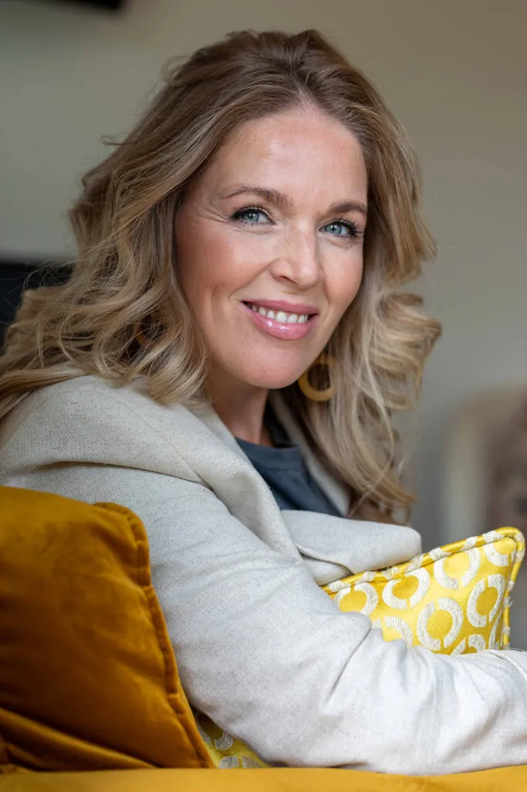

Relatietherapie voor stellen uit Katwijk
Loop je samen vast? Vanuit mijn praktijk in Noordwijk — op zo'n 10 minuten van Katwijk en Rijnsburg — begeleid ik stellen met EFT-relatietherapie naar meer verbinding, rust en vertrouwen.

Veel stellen uit Katwijk en Rijnsburg vinden de weg naar mijn praktijk in Noordwijk — dichtbij, maar net even weg van de eigen omgeving, wat voor veel mensen prettig rustig werkt. Je hoeft niet te wachten op lange wachtlijsten; wel krijg je persoonlijke aandacht en een bewezen aanpak.
Waarmee ik je help
- Communicatie die is vastgelopen
- Emotionele afstand of het "roommates"-gevoel
- Terugkerende conflicten en patronen
- Herstel van vertrouwen na een affaire of crisis
Met EFT naar herstel
Ik werk met EFT (Emotionally Focused Therapy) van Dr. Sue Johnson — wetenschappelijk onderbouwd, met 70-73% kans op volledig herstel. We doorbreken het negatieve patroon en bouwen samen aan nieuwe, veilige verbinding.
"Deborah heeft mij erg goed geholpen! Ik ben zeer tevreden over hoe het traject is gegaan en ik heb weer veel nieuws over mezelf geleerd."

Veelgestelde vragen — relatietherapie Katwijk
Waar vindt de relatietherapie plaats?
In de praktijk in Noordwijk (Offemweg 47), op ongeveer 10-15 minuten rijden vanuit Katwijk en Rijnsburg. Er is voldoende parkeergelegenheid. Online sessies kunnen ook.
Werken jullie met EFT?
Ja. Voor stellen werk ik met EFT (Emotionally Focused Therapy) van Dr. Sue Johnson, een wetenschappelijk onderbouwde methode met 70-73% kans op volledig herstel.
Kan ik vrijblijvend kennismaken?
Zeker. Een kennismakingsgesprek is gratis en vrijblijvend — voor stellen 60 minuten. Zo ontdek je of het klikt.